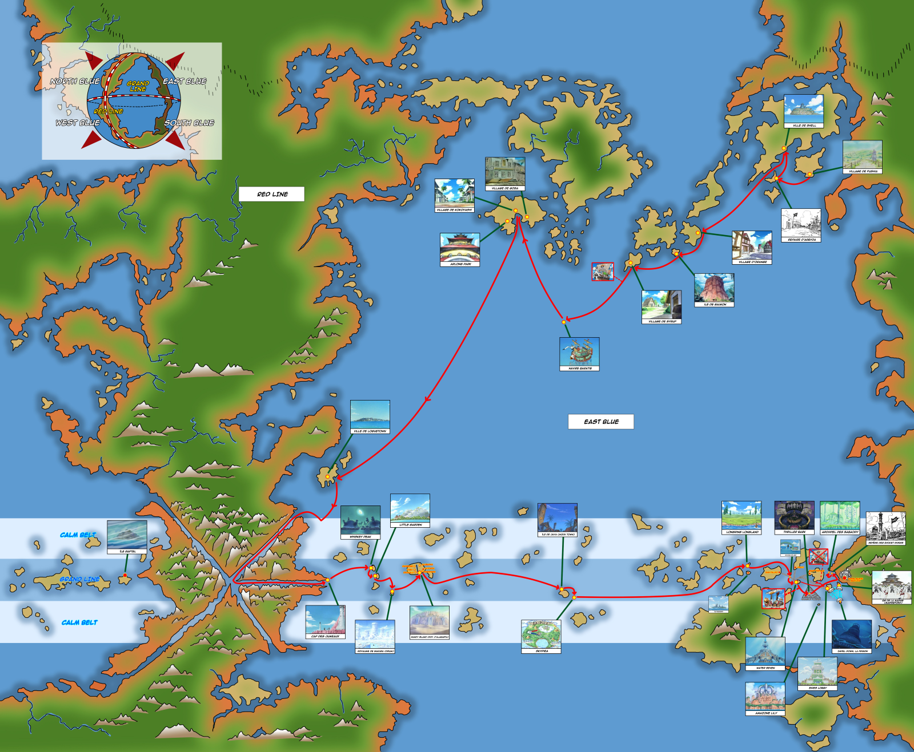

🌎 Explore the Grand Line

Alabasta Arc (Episodes 92-130)
Key Moments: Crocodile fight, Vivi's speech
Fan Theories: Is Cobra alive?
⏳ YOUR ONE PIECE JOURNEY
East Blue ✓
Alabasta ✓
Skypiea ✓
Water 7 ✓
Enies Lobby ✓
Wano ✓
➔Egghead Arc
Last Watched: Episode 1130
- Kuma’s Tragic Past
- Rocks Pirates’ Chaos
- Elbaf’s Mysteries
Not your last watched episode? Update the episode now!
Is Gear 5 too silly?
Fits His Chaotic Spirit (98 votes)
"Luffy's always been ridiculous — this is peak freedom!" – @SunGod4Life
Undermines Luffy's Growth (127 votes)
"Gear 5's cartoonish style clashes with serious arcs like Wano." – @PirateKing2023